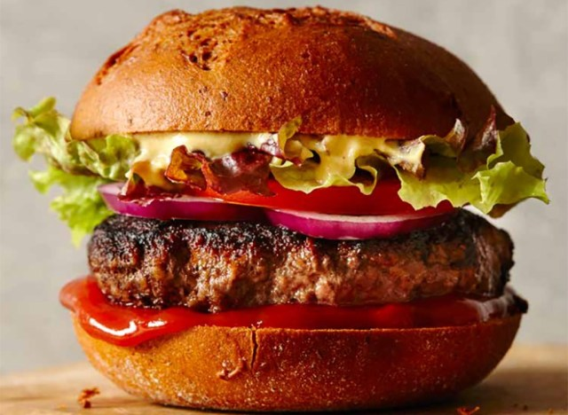
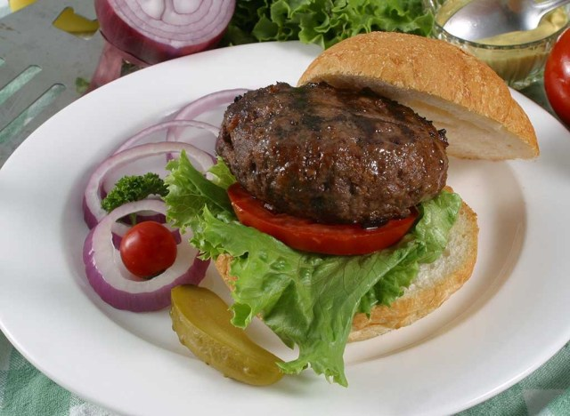
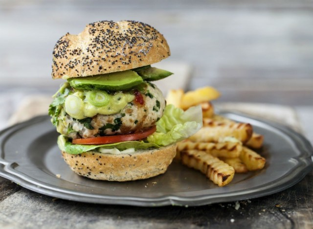

Beef Burger
A traditional ground beef burger can be a good, high-protein meal—especially if it's grass-finished beef, which we'll tell you more about in a second. Beef is one of the best sources of B12, a vitamin essential to the production of red blood cells and energy. "

Elk Burger
Elk burger > beef burger. And here's why: An elk burger not only has more protein than traditional ground beef, but it's also significantly lower in fat. If you're chowing down on a 3-ounce burger (you might want to cut your burger in half to keep your portions in check).

Turkey Burgers
If you choose a turkey burger made from ground breast meat, it will be ultra-lean, low in calories, and low in artery-clogging fat, say the Nutrition Twins, Lyssie Lakatos, RDN, CDN, CFT and Tammy Lakatos Shames, RDN, CDN, CFT, authors of The Nutrition Twins' Veggie Cure.